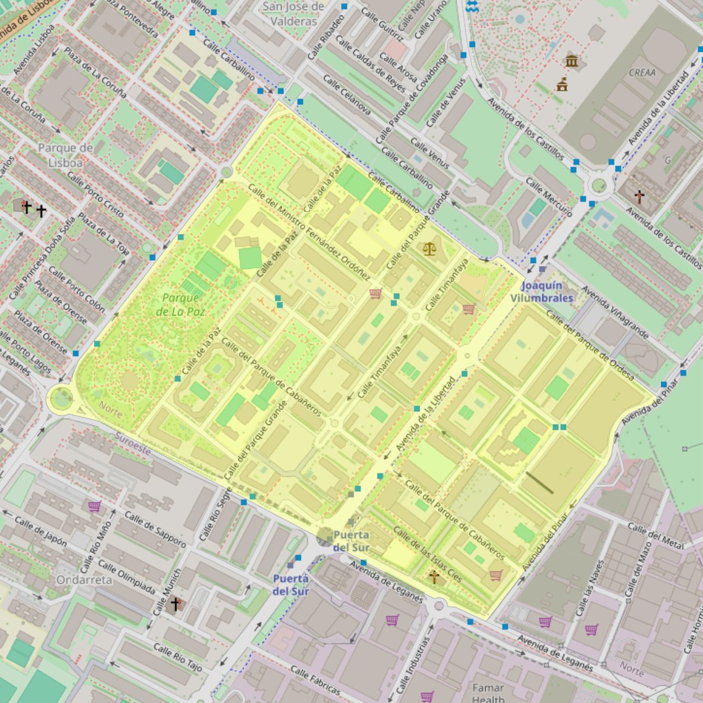

Inmaculada Concepción de Nuestra Señora

- Arciprestazgo
- Alcorcón
- Población
- Alcorcón
- Dirección postal
- c/ Islas Cies, 4
- Código postal
- 28924
- Extensión
- 0,56 km² (56 ha)
- Teléfono
- 916 190 313
Arciprestazgos y parroquias de la Diócesis de Getafe
